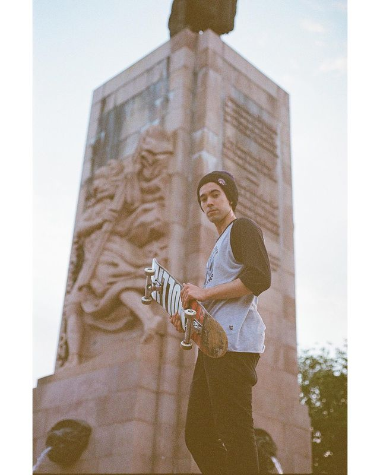

Información Académica
- Primaria: Escuela N13 DE2 "República Islámica de Irán.
- Secundaria: Escuela Superior de Comercio Carlos Pellegini.
- Universitaria: UTN (3 años), UNA (2 años).
- Cursos: Marketing en Redes Sociales (Google) y Desarrollo Web Fullstack (UTN).
Experiencia
- Fotográfo deportivo: con aparición en revista 7CAPAS skateboarding, nota de Respeta la Técnica
- Film maker: SneakerHead Argentina 2018; Akiabara evento linea primavera 2019; Documental de Skateboarding "YENDO: Paris Laurenti" 2020; Videoclip Musical "Manual para Conquistarte" x Martín Abascal 2021.
Portfolio/Reel online:
Datos de Contacto:
- Whatsapp
- E-Mail: marianoaugustocuenca@gmail.com